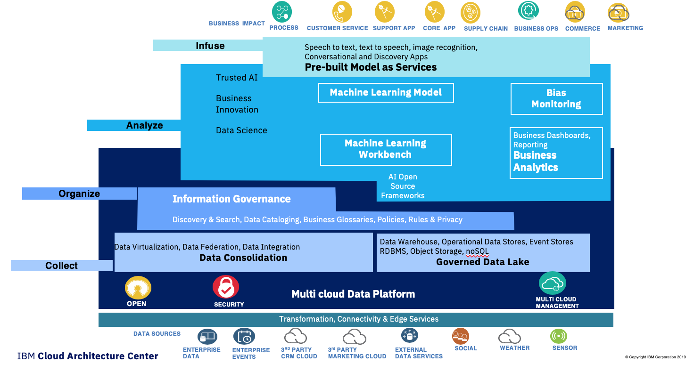

Data and AI Reference Architecture
Abstract
In this reference architecture, we define the architecture patterns and best practices for developing Data and AI intensive applications or Intelligent applications. We consider how data, data governance, analytics and machine learning practices join with the agile life cycle of cloud native application development to enable the development and delivery of Intelligent Applications.
When we consider the Data and AI Reference Architecture in terms of developing intelligent applications it becomes apparent that we are looking at bringing together three architecture patterns:
- Cloud Native application architecture patterns
- Data architecture patterns
- AI architecture patterns
We can think of the Data and AI reference architecture being the sum of these architecture patterns, plus the joins between them. The joins are also key to understanding how Software Engineers, Data Engineers, and Data Scientist, relate and work together in the development of such Intelligent applications.
As we look to methodology for Developing such solutions we need to consider a prescriptive approach which brings those project stakeholders together to be successful. To do this we adopt a four layers approach:
- COLLECT data to make them easier to consume and accessible
- ORGANIZE data to create a trusted analytics foundation on data with business meaning
- ANALYZE to scale business insight with AI everywhere
- INFUSE to operationalize AI with trust and transparency
The figure below represents how those layers are related to each other:

IBM Data and AI Conceptual Architecture
Based on the above prescriptive approach, we cans see that a Data centric and AI reference architecture needs to implement the four layers as shown in the following diagram.

This architecture diagram illustrates 1. strong data collection and management capabilities 1. inside a 'multi cloud data platform' (dark blue area) 1. on which AI capabilities are plugged in to support analyze done by data scientists (machine learning workbench and business analytics).
The data platform addresses the data collection and transformation tasks to move data to a (cloud)local highly scalable data store.
However we must also recognise that there are cases, where data movement can or must be avoided. For examples where: no transformations necessary (e.g. accessing an external data mart via SQL or API) no performance impact (e.g. materialized SQL views served by a parallel database backend) regulatory aspects (each reach access to a data source must be logged to an audit log) real-time aspects (data must be processed immediately, latency of storage too high) size (data movement too expensive from a network bandwith perspective, compute must move toward data source) privacy (data can't be copied, only aggregates as a result of compute can be moved) * network partition (data source unreliable e.g. remote IoT Gateway)
In such cases the data platform provides a virtualization capability which can open a view on remote data sources without moving data.
In Analyze data scientists need to perform: data analysis, which includes making sense of the data using data visualization. feature engineering to define the features they need to build an ML model.
Then to build the model, the development environment provides the AI frameworks and helps the data scientist to select and combine the different algorithms and to tune the hyper parameters. The execution can be done on local cluster or can be executed, at the big data scale level, to a machine learning cluster.
Once the model provides acceptable accuracy level, it can be published so that it can be consumed or infused within an application or as a service.
The model management capability supports the meta-data definition and the life cycle management of the model (data lineage).
Once the model is deployed, monitoring capabilities, ensures the model is still accurate and not biased.
The intelligent application, is represented as a combination of capabilities at the top of the diagram, it can be an application we develop, a business process, an ERP or CRM application, etc. running anywhere on cloud fog, or mist computing.
The intelligent application, accesses the deployed model, sing APIs, and may consumes pre-built models or Cognitive services, such as:
speech to text and text to speech services
image recognition, a tone analyzer services
* NLU Natural Language Understanding and chatbot services.
Data and AI reference architecture capabilities
In this view of the reference architecture we have zoomed in a level to show the detail of how we realize the required capabilities.

The boundary rectangles are color coded to map the higher level purposes: collect, organize, analyze and infuse with each icon representing a capability.
This diagram becomes the foundation of the data AI reference architecture an we will expend details for
environments in following notes.
Mapping to products
The following diagrams illustrate the product mapping to realize the required capability.